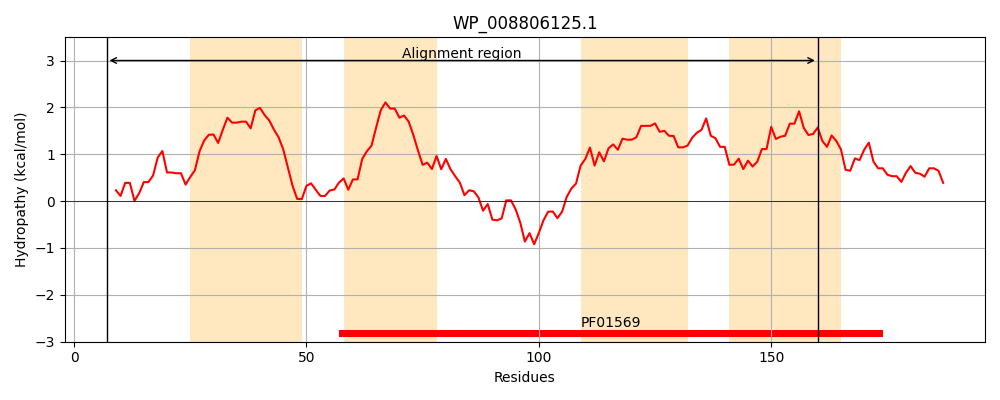
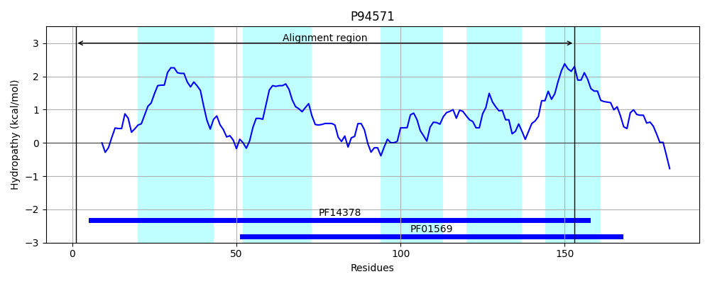
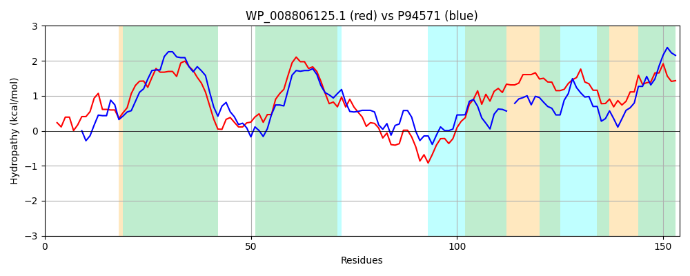

Hit Accession: P94571
Hit TCID: 9.B.105.1.3
Hit Description: gnl|BL_ORD_ID|11717 gnl|TC-DB|P94571|9.B.105.1.3 Undecaprenyl-diphosphatase BcrC OS=Bacillus subtilis (strain 168) GN=bcrC PE=1 SV=1
Mach Len: 154
e:0.000000
Query TMS Count : 4
Hit TMS Count: 5
TMS-Overlap Score: 4.100000
Predicted Substrates:None
BLAST Alignment:
Score: 203 , Bit scores: 82 bits, E-value: 5.6e-20, Alignment length: 154, Percentage identity: 30
Query: 7 LNQSVFFALNAQPGAAEGLLSLARFCASGIVFMMPAIALGLWFLGGREGHRQALFMTLAVMISLGLGMVCGTLWFHPRPFMIPLGHTWISHPADNSFPSDHATVMFSAAFALLSLRLRAPGLLMLLAALPVAWSRIYLGVHFPLDMVGAALVSI 160
+N +F A++ L S+ F + I L +W G + + L+ + + L + + ++F PRPF+ HT I H AD SFPSDH T + + A+L R R G +++ L +SRI++G H+P+D++G+ +V+I
Sbjct: 1 MNYEIFKAIHGLSHHNSVLDSIMVFITEYAIVAYALILLAIWLFGNTQSRKHVLYAGITGIAGLVINYLITLVYFEPRPFVAHTVHTLIPHAADASFPSDHTTGALAISIAML-FRNRKIGWPLVIFGLLTGFSRIWVGHHYPVDVLGSLVVAI 153 | Protein Hydropathy Plots: |
|---|
|  |  |
Pairwise Alignment-Hydropathy Plot:
|
|---|
|  |